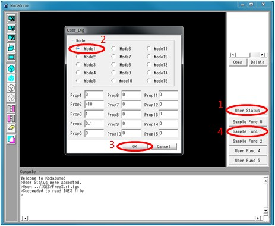
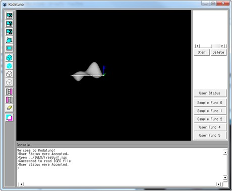
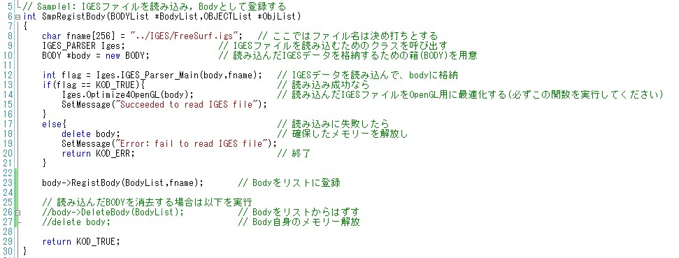

|
|
|
Prev
Index
Next |
(Ex. 1) IGESファイルの読み込みとBodyへの登録
先ほどはメイン画面の"Open"ボタンからIGESファイルを読み込みましたが，ユーザー定義関数内でも同様の操作が可能です． ユーザー定義関数内でIGESファイルを読み込み，それをBodyとして登録することによってそのIGESデータが認識され，グラフィック描画されます．
"SampleFunc1.cpp"のSmpRegistBody()を実行します．＜実行手順＞
- Kodatunoアプリケーションを起動し, "User Status"からMode1を選択し，"Sample Func 1"ボタンを押します．
 - Bodyが1つ表示されたことを確認してください．

＜ソース解説＞
今回はユーザー用ボタンの2つ目，"Sample Func 1"を押しました．これはUSERクラスのコンストラクタ(UserFunc.cpp 8行目)にあるExecSampleFunc1()(15行目)が実行されたことを意味します． ExecSampleFunc1()の実体は"UserFunc.cpp"の77行目からです．SampleFunc0でも述べたように，引数は固定です．この関数内では"User Status"のMode番号によって実行される関数が変わるようなコーディングを行っています． 今回はMode1選択しました．これによってUserStat.Modeに0が代入されますので，81行目のSmpRegistBody()関数が実行されます．
では，SmpRegistBody()を見てみましょう． 今回の例では，読み込むファイル名は8行目に示すように，決め打ちしています．
このファイル名を持ったIGESファイルを実際に読み込むために，IGES_PARSERクラスを呼び出す必要があります(9行目)． さらに，読み込んだIGESデータをBodyとして新たに登録するため，BODYクラスの実体を1つ用意します(10行目)．
実際のIGESファイル読み込みは12行目で，IGESクラスのIGES_Parser_Main()関数を呼び出すことによって行われます．
IGESデータはそれを生成するCADソフトに依存した方言があり，そのままの形でOpenGLの描画関数に渡すと正しく表示されない場合があります． そこで，14行目のIGES_PARSER::Optimize4OpenGL()関数を呼び出し，OpenGLの仕様に沿ったデータ構造へとIGESデータを変更する必要があります． もちろんこの関数によって3D形状が変化するようなことはないはずですが，意図しない描画となってしまう場合はご一報ください．
ここまでで，IGESデータを読み込み，それを新たなBodyとして登録できたわけですが，これだけではグラフィック領域に描画されません． 1.3 Kodatuno内部表現の概要で示したように，新たに生成したBodyはBODYListと呼ばれるリストに登録しなければいけません． Kodatunoの描画関数はこのリストを辿りながらBodyを順番に描画していくようになっています．そこで，23行目のbody->RegistBody()関数を実行し，今生成したBody をリストに登録します．
逆にBodyを消去する方法もここで説明しておきます．
Bodyの消去は26, 27行目にコメントとして示しておきました．基本的には読み込みの逆順を辿ればよく，まずbody->DeleteBody()によってBodyをリストからはずし，(27行目)， 自分で確保したBODY型のメモリーも消去(29行目)します．
以上で(Ex. 1)の解説を終了します．次は読み込んだBodyに対して平行・回転・拡大・縮小などのアフィン変換を行う方法について解説します．
| Copyright(C) Kodatuno Development Team, 2011 | Last modified: Nov. 11, 2011 |